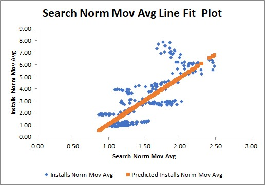
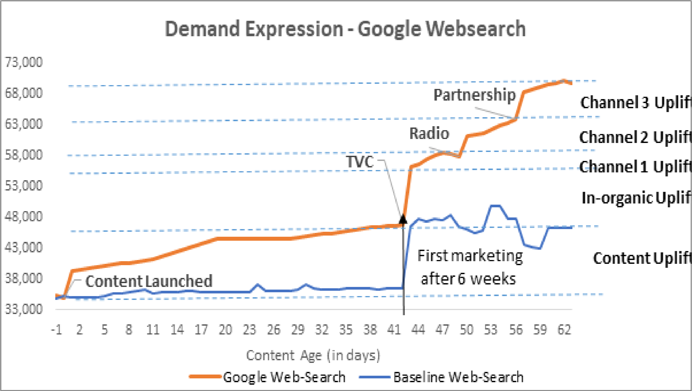
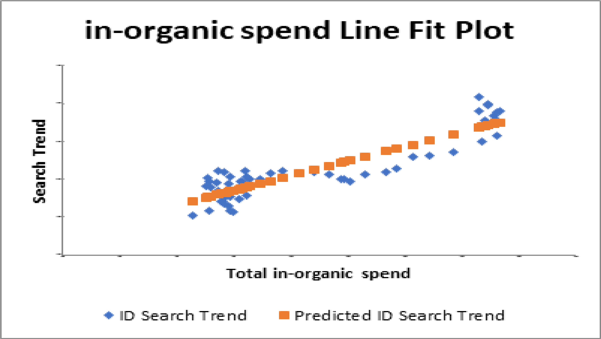
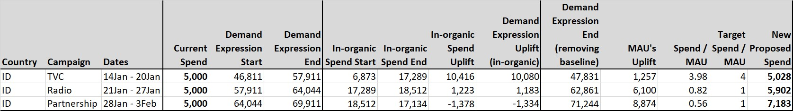
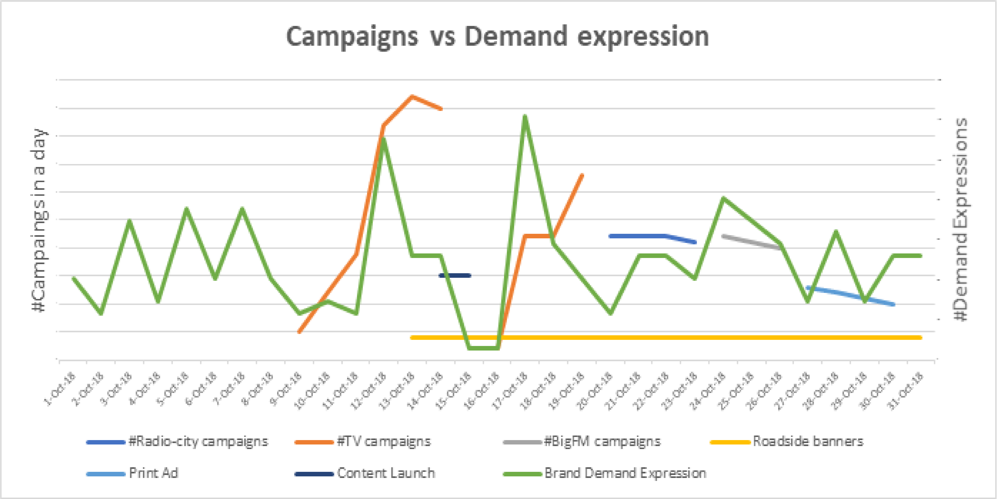

What are the problems we face today and therefore what questions need to be answered to drive Organic search
- How do we define and measure ”Organic Demand” or “Demand Expressions”
- What are Demand Expressions?
- How does it align to our key KPI – App Organic MAUs?
- How do we understand what was the impact of just Content Pull Factor on Demand Expressions?
- How do we understand which marketing channels are contributing how much to increasing “Demand Expressions”?
- How do we adjust budgets across channels (media mix modelling) to maximize Organic Demand?
- How do we optimize within each channel to understand campaign/ creative level impact and therefore improve performance?
- How will this work in practice?
Step followed to answer the questions
- Define Demand Expression
- Organic Search intent demonstrated by users for our brand
- Establish Statistical Relationship between Demand Expression and App Organic MAU’s
- What percentage of installs can be explained by the demand expressions
- Establish the model of attributing activity impact on Demand Expression
- What percentage of the demand expressions can be explained by inorganic spends
- Establish the model to measure cost effectiveness of campaign activity
- Getting Spends/users for each offline campaign
- Establish campaign level analytics to help channels optimize on an ongoing basis
- Deep diving into each campaign to increase the performance of each campaign
Steps Taken:
Step 1: Establish Statistical Relationship between Demand expression & App Organic MAU’s
- For installs: Derive total installs that have happened from the system, removing likely fraud installs
- For search impressions:
- Got overall number from keyword planner
- Got pattern from the google trends for the brand keyword
- Found the multiplier and used that multiplier on the trends number to get the daily level search impressions for all countries
- Removed outliers from the data
- Normalized and smoothen the data
- Run linear regression model
Output:
 As Demand Expressions go up, Organic App MAUs goes up
X% of the variation in Installs is explained by demand expression
Step 2: Establish the model of attributing Activity impact on Demand Expression

Establish Statistical Relationship between Demand expression and in-organic spend (Baseline)
Steps Taken:
- For in-organic spend: Got in-organic daily channel level spend from the in-organic team
- For Demand Expressions: Used the same demand expression numbers as used in Step1, explained earlier
- Got overall number from keyword planner
- Got pattern from the google trends for the brand keyword
- Found the multiplier and used that multiplier on the trends number to get the daily level search impressions for each countries
- Removed outliers from the data
- Ran daily level linear regression model on the in-organic spend versus demand expression
Output:  As in-organic spend go up, Demand expression goes up
X% of the variation in Demand Expression is explained
Step 3: Establish the model to measure cost effectiveness of campaign activity
Measuring cost effectiveness of campaign activity

Definitions:
- Current Spend: Total marketing budget spend on running this campaign
- Demand Expressions Start/End: Total Demand Expression of brand keyword at the start or end of running this campaign
- In-organic spend Start/End: in-organic spend at the start or end of running this campaign
- In-organic spend Uplift: Change in InOrganic spend while running this campaign
- Demand Expressions Uplift (in-organic): Uplift in Demand Expression of brand keyword because of change in in-organic spend
- Demand Expressions (removing baseline): Uplift in Demand Expression of brand keyword after removing InOrganic Spend impact
- MAU's Uplift: Uplift in App Organic MAU's by running this campaign
- Spend/MAU: Spend for getting each app organic MAU
- Target Spend/MAU: Target spend for getting each app organic MAU
- New proposed spend: Proposed optimised marketing spend on each campaign to get best allocation of budget
Output:
Optimised marketing budget (New Proposed Spend) based on:
- Current Spending
- Increase in demand expression based on current spending
- Change in InOrganic Spending
- Impact on Demand Expressions because of change in InOrganic Spending
- Removing the impact of InOrganic spend on Demand Expressions
- Increase in MAU’s because of running this campaign
- Target Cost per MAU for the industry
New Proposed optimized Organic budget planned
Final intermediate output might look something like this:

- 7th Oct: Teaser was launched
- 9th Oct: TV started campaigning and have a sudden impact on demand impressions
- 12th Oct: First peak because of ATL push
- 13th Oct: Road side banner started
- 14th Oct: Content was launched
- 16th Oct: TV channel campaigning started again
- 20th Oct: Radio (radiocity) started running its campaigns
- 24th Oct: Radio (BigFM) started running its campaigns
- 27th Oct: Print ads started running its campaigns